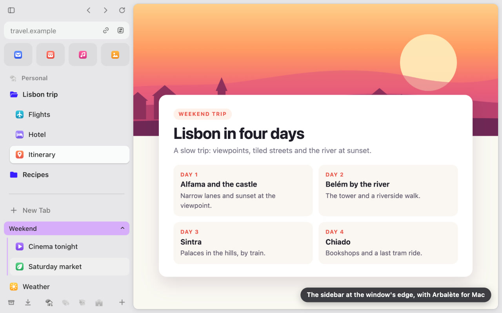
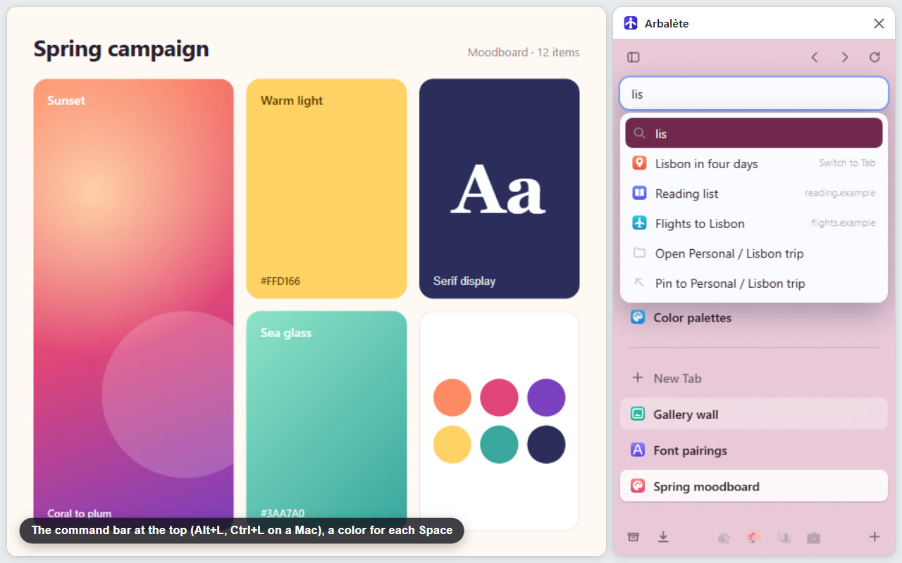
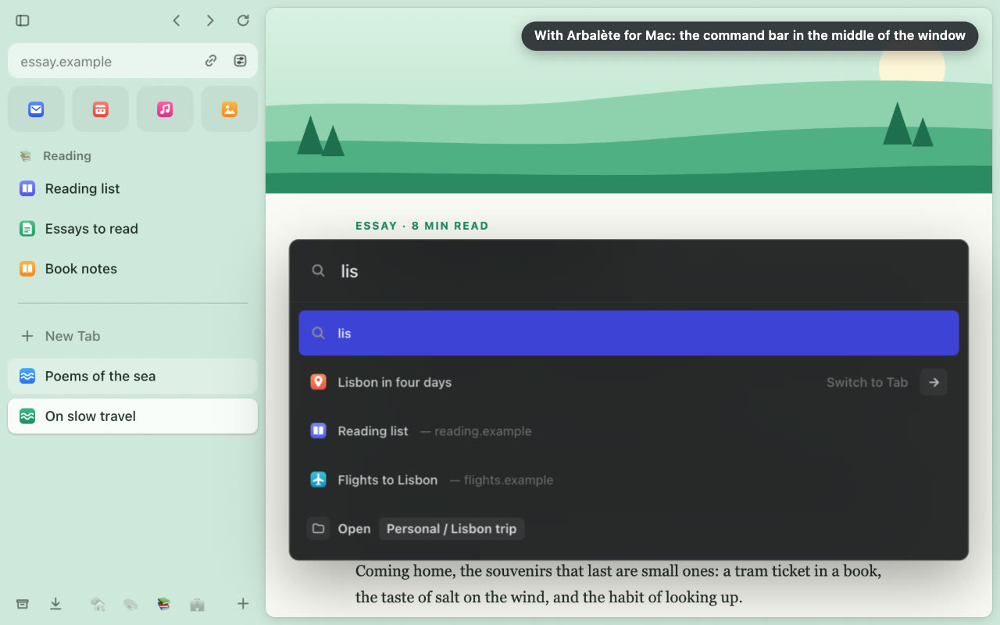

Cette page existe en français.
Arbalète
A sidebar for Google Chrome that keeps your tabs in order, like the one in the Arc browser. No need to know Arc.

What it does
- Your everyday sites as tiles, the Favorites, one click away.
- Spaces, one per project or part of your life, each with its own pinned tabs, folders, icon and color.
- Today: your other tabs, newest on top, with Chrome's tab groups.
- Auto Archive: a tab in Today you have not looked at for 24 hours closes and goes to Archived Tabs, one click to reopen it. Never Favorites, pinned tabs, tabs in a group or tabs playing sound. The delay can be changed.
- A command bar to open a page, search, or find an open tab, a bookmark or a page you visited.
- Chrome's downloads and each site's permissions, from the sidebar.
- Everything stays in Chrome: Favorites are pinned tabs and bookmarks, Spaces are bookmark folders. Remove Arbalète and they all stay. With Chrome Sync, they sync like your other bookmarks.
On Windows, Mac and Linux, plus an app for Mac
In Chrome, on any computer
On Windows, Mac and Linux, the sidebar opens in Chrome's side panel: click Arbalète's icon in the toolbar, then Open Sidebar.
With Arbalète for Mac
A free, optional app for macOS 13 or later: the sidebar at the window's left edge, outside any page, the command bar in the middle of the window and a Ctrl+Tab tab switcher. Install it


Privacy
No account, no server, no analytics, no advertising. Arbalète shows nothing inside web pages and has no access to them. History, Google's search suggestions, downloads and site permissions stay off until you turn them on. Privacy policy
What Chrome lists when you add it: “Read your browsing history” is Chrome's name for reading your open tabs' titles and addresses, and the short list of most visited sites Chrome draws from your history (its New Tab page), for the command bar; the rest of your history stays off until you turn it on; “Read and change your bookmarks”, because Favorites, Spaces and pinned tabs are your Chrome bookmarks; “View and manage your tab groups”, to show Chrome's tab groups.
Who publishes it, and contact
Arbalète is published by PopArchi, an independent developer in France. A question, a problem or a request: write to arbalete@poparchi.com, or open an issue on GitHub if you have an account there.
© 2026 PopArchi. All rights reserved. License